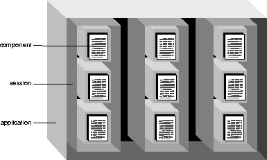

Table of Contents
Table of Contents  Previous Section
Previous Section
Session Code
Sessions are periods during which one user is accessing your application. Because users on different clients may be accessing your application at the same time, a single application may have more than one session accessing it at a time (see Figure 3). Each session has its own copy of the components that its user has requested.

Figure 3. Application, Sessions, and Components
You perform tasks that affect a single session and store variables that persist throughout a session in the session code file. The session code file is named Session and has the appropriate extension (Session.wos, Session.java, or Session.m).
Table of Contents  Next Section
Next Section